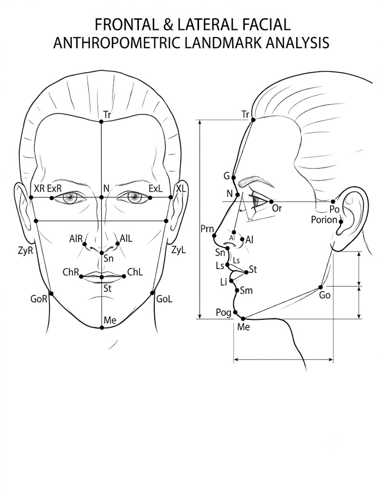

Checking your session…
A clear, front-facing, well-lit photo works best. Look straight at the camera with a neutral expression.
Required for lab-grade accuracy. It lets the engine detect head tilt using the Frankfort plane and correct your ratio automatically. Turn your head 90° so your ear is visible.
Turn your head 90° so your ear is fully visible and the tragion (front of the ear) and lower eye socket aren't blocked by hair.
Points were placed automatically on both photos. Drag any of them to correct their position — your measurement is only as accurate as these dots. Both Front and Side must be confirmed.

Full clinical landmark map — for reference only, we use six of these pointsReference guide — where these points go, per standard anthropometric landmarks
Where the hairline starts, centered above the forehead.
Detection unavailable — place the points manually by clicking on the photo.
Your captured landmarks, front & side